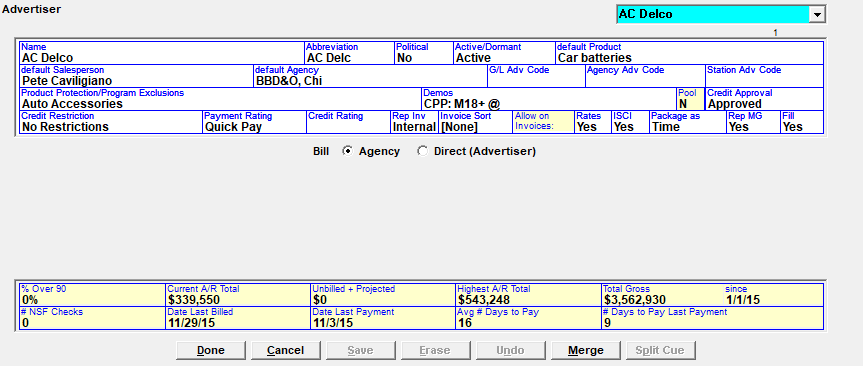
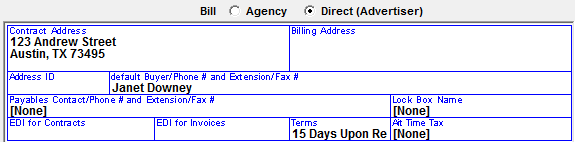
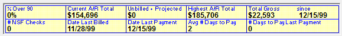

Advertisers
Advertisers can be entered into the system two ways: they can be entered one at a time in advance on the Advertiser List screen, or they can be entered as needed in the Orders Screen.
To enter an Advertiser on the Advertiser Lists screen, click “New” from the advertiser dropdown and press Tab.

- Name: This is the Advertiser’s name
- Abbreviation: This abbreviation will automatically be filled in. You can alter the default. This appears on certain reports and is limited to 7 characters
- Political: You can designate an Advertiser as being Political. Once designated as Political, all revenue will be classified as Political on reports
- Active/Dormant: An Advertiser can be set to Active or Dormant at any time by clicking on the Active/Dormant toggle
- Default Product: This is the default product that will appear in the Proposal/Order Screen during entry
- Default Salesperson: This default Salesperson can be overridden in the Proposal/Order Screen
- Default Agency: This default Agency can be overridden in the Proposal/Order Screen
- G/L Adv Code, Agency Adv Code, Station Adv Code: These codes are used to identify the Advertiser on Accounting exports. (On version 7.0 and prior, the G/L Adv Code is labeled “Rep Adv Code”.)
- They must be activated in the Site Options -> Export tab
- Using Rep Codes: If checked on, you will be able to enter a Rep Agency code to identify agencies in accounting exports
- Using Station Codes: If checked on, you will be able to enter a Station code per vehicle, which will be used to identify exports
- Using Agency Codes: If checked on, you will be able to enter a Standard Agency Code to identify agencies in accounting exports
- Product Protection/Program Exclusions: This default Product Protection can be overridden in the Proposal/Order screen
- Program Exclusions must be activated in the Site Options -> Options tab
- Program Exclusions: If a vehicle or part of a vehicle is considered controversial, you can indicate that an advertiser does not want to air with that vehicle through Program Exclusions. The scheduler will schedule the advertiser around the controversial programming automatically
- Demos: This default Demo can be overridden in the Proposal/Order Screens
- Pool: indicates whether the advertiser is part of the blackout pool or not (version 7.1 and above). The letter Y means it is part of the pool. N means it is not.
- Credit Approval, Credit Restrictions, Payment Rating, Credit Rating: A user must be set up to change these ratings in the User Options -> Selected Fields tab
- Payment Rating in Advertiser and Agency: This allows a user to change an Advertiser or Agency’s Payment Rating in the Advertiser/Agency Screens
- Change Advertiser/Agency Credit Rating: This allows a user to change an Advertiser/Agency’s Credit Rating in the Advertiser/Agency Screens. Orders can only be scheduled if an Advertiser/Agency has been approved
- Credit Restrictions in Advertiser/Agency: This allows a user to change an Advertiser/Agency’s Credit Restrictions in the Advertiser/Agency Screens. Orders cannot be scheduled if an Advertiser/Agency has any credit restrictions
- Rep Inv: Unique feature that defines if the invoice for this advertiser is produced externally by the affiliate or internally by you. This affects how the A/R is updated (internal) or if history is updated (external) when Gen Rep is run
- Invoice Sort: You can define a category that groups invoices with the same requirements together during the invoice run, such as Notarized Scripts Required
- Allow on Invoices: Each of these fields are toggles that can be changed for each Advertiser
- Rates: If set to Yes, spot rates and subtotals by vehicle are shown on the invoice. If set to No, spot rates and subtotals by vehicle are suppressed.
- ISCI: Yes means the client requires their copy information on the spots on the invoice/affidavit and the spots that are missing copy will show on the Missing ISCI Report. No means ISCI is not required for the client
- If an ISCI begins with “WW_”, and a direct advertiser requires those letters to be excluded from their invoice, this setting must be set to either “Ask – default Yes” or “Ask – default No” in Site Options -> Copy, and “ISCI on Invoice” must be set to “W/O Leader”.
- Package As: You can see either airing times or daypart ordered times in the airing column
- Ordered daypart show Name, Time, or None: This setting is in Site Options -> Invoice. This setting allows you to define how you want to see the package spots in the Ordered area on Invoice Form #1. Package spots are created at the time the preliminary or final invoice is generated. The options are:
- Name: Prints the daypart name
- Time: Prints the ordered daypart times or override times
- None: Prints the package vehicle name
- Rep MG: If Rep MG is defined as Yes, then the Prior Missed spots will be considered makegoods, and billed, when extra spots air for future months the order is airing in. If Rep MG is defined No, then any extra spots will be considered bonus
- Ref ID: used on the Custom Revenue Export as the External Advertiser ID and on the WO Invoice Export as the AdvertiserGUID (version 7.1 and above only).
- Direct Ref ID: used on the WO Invoice Export only as the AgencyGUID for direct advertisers (version 7.1 and above only).
- CRM ID: used to store the CRM ID from RAB. Included on the RAB export. (Version 8.1 and above)
Bill Agency or Direct (Advertiser): Generally, Advertisers are associated with an Agency, but if they are Direct (no agency), select the “Direct (Advertiser)” radio button to display additional fields used for direct advertisers, as shown in the picture below.

Direct Advertiser Fields
Contract Address: This is the address that will appear on the contract and invoice. If the invoice address is different from the mailing address, enter the address to receive the invoice in the Billing Address field.
Address ID: similar to the agency city ID, the Address ID is a way to distinguish multiple direct advertisers that have the same name from each other, by giving each a unique address ID. This address ID is mandatory if the Site Options setting “System used for network/syndication or radio stations” is set to “radio stations”.
Default Buyer/Phone # and Extension/Fax #: This is the default buyer for the direct advertiser, which can be overridden in the Proposal/Order Screen. This will appear on the contract and invoice.
Payables Contact/Phone # and Extension/Fax #: This is the default AP contact
Lock Box Name: The Lock Box addresses are defined in Lists -> Lock Box and then associated with an agency/advertiser. Lock Box is used if the payment from specific agencies/advertisers is to be sent to a different location. There is also a Site Options -> Invoice setting “Lock Box by Vehicle instead of Payee” that may be needed if your vehicles are stations where the payment will be sent
EDI for Contracts: Not currently implemented.
EDI for Invoices: If using electronic invoices, you must check “Using EDI Service for Invoices” in the Site Options -> Export tab, and set up your service in the Lists -> EDI screen. Then select the EDI service being used from this dropdown. You can also select “PDF Email” from this dropdown to enable this direct advertiser to use the PDF email feature, which automatically emails final and reprint invoices to the recipients defined for an agency or direct advertiser. To configure a direct advertiser to use the PDF Email feature, select “PDF Email” from the “EDI for Invoices” dropdown, double click, then enter the names and email addresses of the email recipients. Up to four personnel records can be entered. After entering the email recipients, press Done on the PDF Email Invoice Personnel screen, then save the direct advertiser.
Terms: The default Remit terms are defined in Site Options -> Export.
Commercial Tax: If applicable set up the tax terms in Site Options -> Invoice. (Note: this field is named Commercial Tax on version 8.1 and above.)
Suppress Net Amount for Trade Invoices: The default value is blank or No. If a direct advertiser has the setting “Suppress Net Amount for Trade Invoices” set to Yes, then any trade invoice (from 1% trade to 100% trade) for that direct advertiser will show $0 in the “Net Amount” field at the bottom of the invoice. If any invoices are processed in this way, the final page of the invoice run will show “Less Trade” and the amount of trade dollars that were suppressed in this way, and that trade amount will be excluded from the final “Pay this amount” total on the final invoice page.
Additional Information
Any field in yellow throughout the System is automatically calculated and updated. These yellow fields provide an aging and credit snapshot for the Advertiser.

Merge
This will merge advertiser profiles and contracts together
- Choose the “Name to Remove” and the “Replacement Name”.
- Click the Move button to place the merge in the white list box.
- Select the Merge Button.
Split Cue
This field is only active when the Audio Vault RPS Automation export is enabled in Traffic Site Options. The Split Cue field is used to enter an Audio Vault Indicator ID and X-Digital Replacement Cue for use with a special configuration of the remote Traffic export. The Audio Vault Indicator ID appears above a spot with split copy on the Audio Vault RPS export and the X-Digital Replacement Cue replaces the standard HB or HBP cue when there is regional copy for that cue.